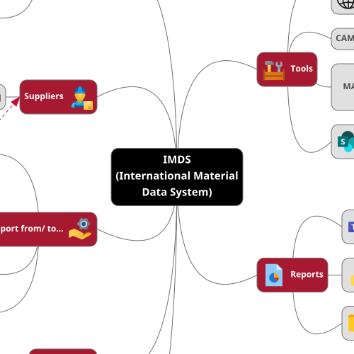

Browsers are
difficult
Please wait, loading your map...

IMDS
(International Material
Data System)
Clients/ Customers
Material Data Sheets
PFAS
Conflict Minerals/
Extended Minerals
Suppliers
Components
Support from/ to...
from: SQM/ SQE
from: Sourcing
(Procurement)
from: Product
Engineering
to: Advanced Quality
Portals
Documents/ References
International
Organization for
Standardization
ISO 1043
Plastics — Symbols and
abbreviated terms
DIN ISO 1629
Rubber and latices –
Nomenclature
ISO 11469
Plastics — Generic
identification and
marking of plastics
products
ISO 18064
Thermoplastic
elastomers —
Nomenclature and
abbreviated terms
Tools
IMDS
CAMDS
MatWeb
MATERIAL PROPERTY
DATA
SharePoint/ Teams
Reports
Teams/ SharePoint
Power BI
Shared Drive
×
Created by: G.Vasquez | Juarez, Mexico | v2025.10.21